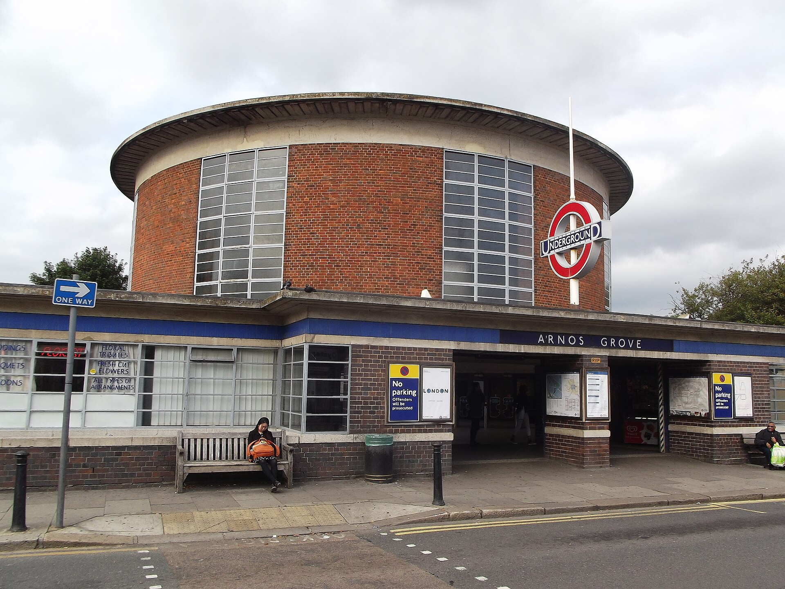

Lesson of 55 minutes, timed for 52 minutes. 8 lessons. Adapted version, B1. The button that shows only one step at a time stays optional: all the content is visible by default.
Read an advertisement about the Tube and understand why it makes people laugh.
Stopping point. End of this lesson. Next time: 1863, the first underground railway.
Emergency exit · 8 min. If time runs short at this stopping point, we condense: we dictate a short written record (why the advert makes people laugh, in one sentence) ; a round of the class, one sentence each (three words about London or about British humour), so that everyone has spoken at least once; the homework (the homework already given on the page) is written on the board.
Understand how London built the world's first underground railway.
Stopping point. End of this lesson. Next time: the Tube and Beck's map.
Emergency exit · 8 min. If time runs short at this stopping point, we condense: we dictate a short written record (a date and a fact about 1863) ; a round of the class, one sentence each (a sentence in the past about the building of the Underground), so that everyone has spoken at least once; the homework (the homework already given on the page) is written on the board.
See why a simple map can be worth more than an exact one.
Stopping point. End of this lesson. Next time: the lines and what they serve.
Emergency exit · 8 min. If time runs short at this stopping point, we condense: we dictate a short written record (why Beck's map is simple, in one sentence) ; a round of the class, one sentence each (a station and its line), so that everyone has spoken at least once; the homework (the homework already given on the page) is written on the board.
Choose a line to go somewhere.
Stopping point. End of this lesson. Next time: posters: selling the city.
Emergency exit · 8 min. If time runs short at this stopping point, we condense: we dictate a short written record (Take the … line to …) ; a round of the class, one sentence each (a route in one sentence), so that everyone has spoken at least once; the homework (the homework already given on the page) is written on the board.
See how the Underground sold London to Londoners.
Stopping point. End of this lesson. Next time: Mind the gap: British humour.
Emergency exit · 8 min. If time runs short at this stopping point, we condense: we dictate a short written record (a word about a poster and its purpose) ; a round of the class, one sentence each (a sentence to sell a day out in London), so that everyone has spoken at least once; the homework (the homework already given on the page) is written on the board.
Link the Tube to British humour.
Stopping point. End of this lesson. Next time: the final task.
Emergency exit · 8 min. If time runs short at this stopping point, we condense: we dictate a short written record (a humour phrase or Mind the gap) ; a round of the class, one sentence each (a sentence about what makes people laugh), so that everyone has spoken at least once; the homework (the homework already given on the page) is written on the board.
Reuse the sequence in a final task.
Stopping point. End of this lesson. Next time: the summative assessment.
Emergency exit · 8 min. If time runs short at this stopping point, we condense: we dictate a short written record (the plan of the task in three points) ; a round of the class, one sentence each (a sentence from the role or the presentation), so that everyone has spoken at least once; the homework (finish the task at home if it is not completed) is written on the board.
Read, find your way on the lines, and write.
Stopping point. End of the Tube sequence.
Emergency exit · 8 min. If time runs short at this stopping point, we condense: we dictate a short written record (a key sentence from the written work) ; a round of the class, one sentence each (a spoken route in one sentence), so that everyone has spoken at least once; the homework (reread your paper or revise the I can… sentences) is written on the board.
Go down into the oldest underground railway in the world: engineering, design, posters and British humour. This sequence follows London Buses and belongs to A Long Heritage: British Public Transport.
